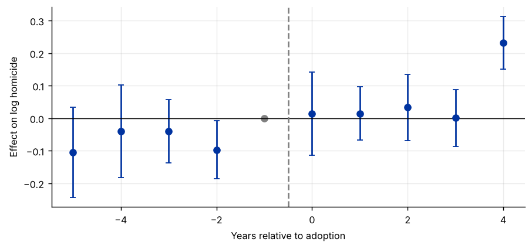

Step 1The question and why timing matters
The question is the one in the DiD guide: did stand-your-ground laws change homicide rates? But now all 21 adopting states are used, and they passed their laws in different years. That is the usual situation in policy evaluation: minimum-wage increases, Medicaid expansions, carbon taxes and central-bank reforms all arrive at different dates in different places.
The tempting regression is the same as before:
Why the conventional regression fails
Goodman-Bacon (2021) showed that \(\tau^{TWFE}\) is a weighted average of every 2×2 DiD comparison in the data. Some of those comparisons use states that adopted earlier as the control group for states that adopt later. If the effect of the law grows or changes over time, the earlier adopters' outcomes are still moving because of their own treatment, and subtracting them removes part of the effect, or even flips its sign. Some weights can be negative. The fix is to estimate the effect for each adoption cohort separately, against clean controls, and then average: the group-time ATT of Callaway and Sant'Anna (2021).
How to write it: design
States enacted Castle Doctrine laws at different dates between 2006 and 2010. Because two-way fixed-effects estimates are biased under staggered adoption when treatment effects vary over time or across cohorts (Goodman-Bacon 2021; de Chaisemartin and D'Haultfœuille 2020), we estimate cohort-specific average treatment effects on the treated, using never-treated states as controls, and aggregate them following Callaway and Sant'Anna (2021).
Step 2Load the data and look at the cohorts
import pandas as pd
import numpy as np
import matplotlib.pyplot as plt
from linearmodels.panel import PanelOLS
from causal_tests import event_study # helper file: causal-inference-guide/examples/causal_tests.py
df = pd.read_csv("castle.csv")
first = df[df["castle_law"] == 1].groupby("state")["year"].min()
df["cohort"] = df["state"].map(first) # adoption year, NaN if never treated
print(f"{df['state'].nunique()} states, {df['year'].min()}-{df['year'].max()}")
print("States by adoption year:", first.value_counts().sort_index().to_dict(), f"never treated: {df['cohort'].isna().groupby(df['state']).first().sum()}")50 states, 2000-2010
States by adoption year: {2006: 1, 2007: 13, 2008: 4, 2009: 2, 2010: 1} never treated: 29How to read it
Five adoption cohorts, with most states adopting in 2007, and 29 states that never adopt. The never-treated states are the clean comparison group. Without them, the not-yet-treated states could serve instead.
Step 3The conventional two-way fixed-effects estimate
panel = df.set_index(["state", "year"])
twfe = PanelOLS.from_formula("l_homicide ~ castle_law + EntityEffects + TimeEffects", panel).fit(cov_type="clustered", cluster_entity=True)
print(f"TWFE: {twfe.params['castle_law']:.4f} (s.e. {twfe.std_errors['castle_law']:.4f}), p-value {twfe.pvalues['castle_law']:.3f}")TWFE: 0.0694 (s.e. 0.0581), p-value 0.233
How to read it
The TWFE estimate is about 0.07: homicide about 7% higher after adoption, though not significant with clustered standard errors. This is the number many papers would report. Under staggered adoption it is not a well-defined average of the effects, so it has to be checked against estimators that are.
Step 4Group-time effects: one clean comparison per cohort and year
W = df.pivot(index="state", columns="year", values="l_homicide")
never = df.loc[df["cohort"].isna(), "state"].unique()
rows = []
for g in sorted(first.unique()):
gu = first.index[first == g]
for t in W.columns:
if t == g - 1:
continue
att = (W.loc[gu, t] - W.loc[gu, g - 1]).mean() - (W.loc[never, t] - W.loc[never, g - 1]).mean()
rows.append(dict(cohort=g, year=t, e=t - g, att=att, n=len(gu)))
gt = pd.DataFrame(rows)
print(gt.pivot(index="cohort", columns="year", values="att").round(3).to_string())year 2000 2001 2002 2003 2004 2005 2006 2007 2008 2009 2010 cohort 2006 0.176 0.116 0.134 0.120 0.120 NaN 0.219 0.297 0.270 0.262 0.232 2007 -0.052 -0.049 -0.089 -0.047 -0.052 -0.108 NaN 0.052 -0.044 0.021 -0.019 2008 -0.254 -0.078 -0.213 -0.109 -0.134 0.016 -0.145 NaN -0.208 0.126 0.014 2009 -0.284 -0.315 -0.069 0.042 -0.016 0.126 0.067 -0.037 NaN 0.222 0.034 2010 -0.507 0.021 -0.743 -0.134 -0.145 -0.694 -0.081 -0.463 -0.103 NaN -0.211
How to read it
Each cell is a separate 2×2 comparison: cohort \(g\) against the never-treated states, between year \(t\) and the year before adoption, \(g-1\). Cells before adoption are placebo comparisons and should be near zero; cells after adoption are effects. Nothing in this table uses an already-treated state as a control. The cohorts with one or two states (2006, 2009, 2010) are noisy, so the cells are aggregated next.
Step 5Aggregate: the event study and the overall ATT
es = event_study(df, unit="state", time="year", y="l_homicide", treat="castle_law")
ev = pd.DataFrame(es["event"])
fig, ax = plt.subplots()
ax.errorbar(ev["e"], ev["est"], yerr=1.96 * ev["se"], fmt="o", capsize=3)
ax.scatter([-1], [0], color="grey"); ax.axhline(0, color="black", lw=.8); ax.axvline(-0.5, color="grey", ls="--")
ax.set_xlabel("Years relative to adoption"); ax.set_ylabel("Effect on log homicide")
print(ev.round(4).to_string(index=False))
print(f"\nPre-trend test (leads -5 to -2): chi2({es['pretrend']['df']}) = {es['pretrend']['stat']:.2f}, p-value = {es['pretrend']['p']:.3f}")
print(f"Overall ATT (Callaway-Sant'Anna): {es['att']['est']:.4f} (bootstrap s.e. {es['att']['se']:.4f})")
print(f"TWFE for comparison: {es['twfe']['est']:.4f} (s.e. {es['twfe']['se']:.4f})")e est se -5 -0.1049 0.0710 -4 -0.0404 0.0724 -3 -0.0393 0.0497 -2 -0.0972 0.0454 0 0.0143 0.0652 1 0.0146 0.0416 2 0.0332 0.0521 3 0.0009 0.0448 4 0.2322 0.0413 Pre-trend test (leads -5 to -2): chi2(4) = 8.51, p-value = 0.074 Overall ATT (Callaway-Sant'Anna): 0.0194 (bootstrap s.e. 0.0380) TWFE for comparison: 0.0694 (s.e. 0.0558)

How to read it
- Event study. The group-time effects are averaged by years since adoption, weighting cohorts by size. Standard errors come from a cluster bootstrap over states.
- Pre-trends. The leads are jointly insignificant at 5% (p ≈ 0.07). Not a clean pass: a sensitivity analysis is advisable.
- The overall ATT is about 0.02, a third of the TWFE estimate and far from significance.
- Look at the leads. They are all negative, around −0.04 to −0.10: relative to the never-treated states, homicide in adopting states was lower several years before adoption than in the year just before it. In other words, it was already rising. This estimator measures everything against the year before adoption, so it does not count that earlier rise as an effect of the law.
- The large estimate four years after adoption rests on the single 2006 adopter (Florida) and should not be over-interpreted.
Step 6Robustness: the imputation estimator
# state and year effects estimated on untreated observations only, then Y(0) imputed for treated observations
u = df[df["castle_law"] == 0].copy()
mu = u["l_homicide"].mean()
a = (u.groupby("state")["l_homicide"].mean() - mu)
for _ in range(50): # alternate to get two-way effects on an unbalanced sample
lam = (u["l_homicide"] - u["state"].map(a) - mu).groupby(u["year"]).mean()
a = (u["l_homicide"] - u["year"].map(lam) - mu).groupby(u["state"]).mean()
tr = df[df["castle_law"] == 1].copy()
tr["y0"] = mu + tr["state"].map(a) + tr["year"].map(lam)
tr["gap"] = tr["l_homicide"] - tr["y0"]
print(f"Imputation estimator (Borusyak, Jaravel and Spiess): ATT = {tr['gap'].mean():.4f} over {len(tr)} treated state-years")
print(tr.assign(e=tr["year"] - tr["cohort"]).groupby("e")["gap"].mean().round(4).to_string())Imputation estimator (Borusyak, Jaravel and Spiess): ATT = 0.0669 over 74 treated state-years e 0.0 0.0727 1.0 0.0627 2.0 0.0825 3.0 0.0409 4.0 0.1133
How to read it
The imputation estimator fits state and year effects only on untreated observations, predicts what each treated state-year would have been without the law, and averages the gaps. Like Callaway–Sant'Anna, it never uses treated observations as controls, so it is free of the staggered-adoption bias.
It gives about 0.07, close to TWFE. So in this dataset the bias from comparing late with early adopters is small. The real divergence is between estimators that use all pre-treatment years as the baseline (TWFE, imputation: about 0.07) and the one that uses only the year before adoption (Callaway–Sant'Anna: about 0.02). The leads explain it: homicide in adopting states was already rising relative to controls before the laws, and an all-years baseline attributes part of that rise to the law.
The honest conclusion: the estimated effect depends on how the pre-trend is handled, and none of the estimates is statistically significant. Report all three, show the event study, and add a sensitivity analysis for violations of parallel trends (Rambachan and Roth 2023). (Standard errors for the imputation estimator are best obtained with the did_imputation package in Stata or a cluster bootstrap.)
Step 7Write the paper
How to write it: results
Because states adopted Castle Doctrine laws at different dates, we report heterogeneity-robust estimators alongside the two-way fixed-effects estimate. The two-way fixed-effects and imputation estimators, which use all pre-adoption years as the baseline, both indicate an increase in homicide of about 7 percent; the Callaway–Sant'Anna estimator, which uses the year before adoption as the baseline, indicates about 2 percent. None of the estimates is statistically significant. The pre-adoption event-study coefficients are negative and jointly significant at the 10 but not the 5 percent level, suggesting that homicide was already rising in adopting states; the results are therefore sensitive to how this pre-trend is treated.
Common mistakes
- Reporting only the TWFE coefficient under staggered adoption.
- Running a conventional event-study regression with relative-time dummies under staggered adoption: it suffers from the same contamination (Sun and Abraham 2021). Use cohort-specific estimates.
- Not saying which controls are used: never-treated or not-yet-treated. They rest on different assumptions; report both if possible.
- Ignoring small cohorts. A cohort of one state drives the event-time estimates where it is alone.